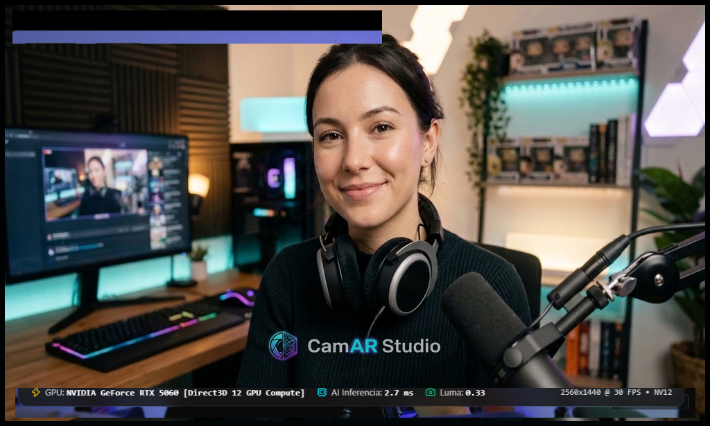

Retoque facial, looks de maquillaje y filtros en tiempo real, directamente en tu cámara. Funciona con OBS, TikTok Live Studio, Zoom, Discord y cualquier programa que use una webcam.
Para Windows 10 y 11 de 64 bits · Prueba gratis con marca de agua

Aparece con los programas que aún no tienen firma digital. Descarga CamAR Studio solo desde esta página para asegurarte de tener el archivo original.
Sí. Desvincula la licencia en el PC actual desde la ventana de activación y úsala en el nuevo. Hace falta conexión a internet para ese paso.
No. La suscripción se verifica una vez al día si hay conexión, y sigue funcionando hasta 14 días sin internet.
CamAR Studio sigue funcionando con marca de agua cuando termine el periodo pagado. Si renuevas, se reactiva sola.